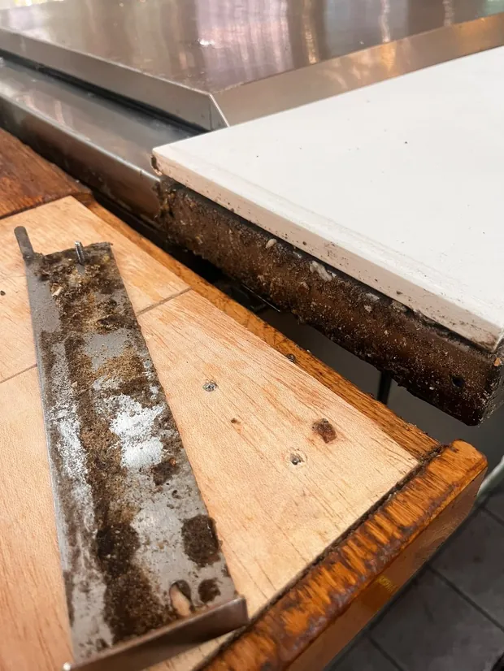
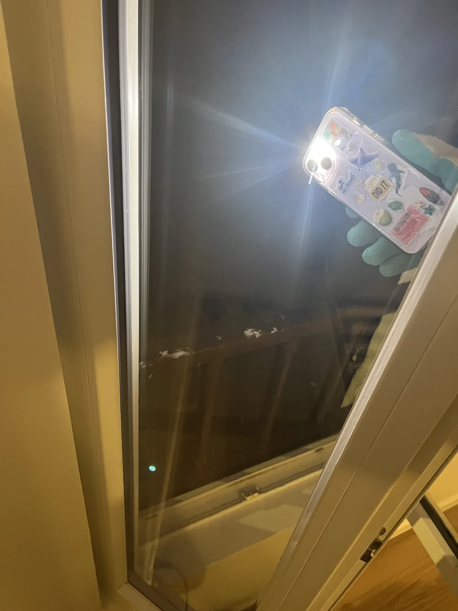

Dégraissage de hotte et de conduits d'extraction
Hotte, filtres, bac à graisse et conduits d'extraction jusqu'au ventilateur : le circuit complet, dégraissé en une intervention de nuit.
Dégraissage de hottes à Paris
La graisse de cuisson ne reste pas sur la hotte. Elle est aspirée, se condense en remontant dans le conduit, et s'y dépose en une couche qui s'épaissit chaque service. Cette couche est combustible : c'est elle qui transforme un départ de feu sur un piano en feu de conduit, lequel se propage dans les gaines à travers les planchers. La plupart des incendies de restaurant ne partent pas de la cuisine, ils y passent.
Le second effet est quotidien et moins spectaculaire : un conduit encrassé perd sa section utile. L'extraction tire moins, les buées restent en salle, les odeurs s'installent dans les textiles et le personnel travaille dans une cuisine plus chaude. Une extraction qui faiblit progressivement ne se remarque pas — jusqu'au jour où l'on compare avant et après.

Ce que couvre l'intervention
- Hotte : intérieur, extérieur, soudures et angles, dégraissage à l'alcalin puis rinçage
- Filtres à chocs ou à cassettes : démontage, trempage, rinçage haute pression, remontage
- Bac à graisse et gouttières : vidange et nettoyage complet
- Plafond filtrant le cas échéant, module par module
- Conduits d'extraction : gaines accessibles jusqu'au ventilateur, par les trappes de visite
- Ventilateur d'extraction : turbine et volute dégraissées
Tarif : sur devis. Cette prestation se chiffre au cas par cas : nous établissons un devis gratuit et ferme après échange. Les frais de déplacement (5 € par tranche de 5 km depuis notre atelier du Blanc-Mesnil (93)) s'ajoutent et vous sont annoncés avant validation.
Nous venons entièrement équipés — machines, produits, eau et électricité. Vous n'avez ni prise ni point d'eau à fournir.
Comment nous procédons
Repérage et protection
Relevé du circuit, repérage des trappes de visite, et bâchage du piano, des plans de travail et des sols. Rien ne doit recevoir de produit ni de dépôt.
Démontage
Filtres, gouttières et bac à graisse sont déposés et mis à tremper dans un bain alcalin pendant que le reste est traité.
Dégraissage alcalin
Produit à temps de pose sur la hotte et les parois du conduit, puis action mécanique. La graisse polymérisée par la chaleur ne part pas au chiffon : c'est la chimie et le temps qui la décollent, pas la force.
Conduits et ventilateur
Progression par les trappes de visite jusqu'au ventilateur, turbine et volute comprises. Les zones sans trappe sont signalées plutôt que contournées en silence.
Rinçage, remontage, contrôle
Rinçage complet, remontage, essai de l'extraction, et photos avant/après de chaque zone traitée. Vous notez la date dans votre livret d'entretien.
Dégraissage de hottes : vos questions
À quelle fréquence la loi impose-t-elle ce nettoyage ?
Pour un établissement recevant du public, l'article GC 21 de l'arrêté du 25 juin 1980 impose un ramonage des conduits d'évacuation et une vérification de leur vacuité au moins une fois par an, et un nettoyage ou remplacement des filtres au moins une fois par semaine. Le circuit d'extraction lui-même doit être nettoyé aussi souvent que nécessaire. Un livret d'entretien, annexé au registre de sécurité, consigne les dates.
Faut-il fermer la cuisine ?
Non. Nous intervenons après le dernier service ou avant l'ouverture, de nuit si besoin, sans supplément. La cuisine est rendue propre et opérationnelle pour le service suivant.
Combien de temps dure une intervention ?
De trois à huit heures selon la longueur du conduit, l'accessibilité des trappes et l'ancienneté du dépôt. Une première intervention sur une installation jamais traitée prend toujours plus longtemps qu'un passage d'entretien.
Et s'il n'y a pas de trappe de visite sur le conduit ?
Nous traitons ce qui est accessible et nous vous le disons par écrit, avec les zones non atteintes repérées sur un schéma. La pose de trappes relève d'un installateur : nous ne perçons pas une gaine, et nous ne faisons pas semblant d'avoir nettoyé ce que nous n'avons pas vu.
Que remettez-vous après l'intervention ?
Un jeu de photos avant/après par zone traitée, et le détail de ce qui a été fait et de ce qui ne l'a pas été. Vous reportez la date dans votre livret d'entretien, qui est le document que vous présentez en cas de contrôle.
Dégraissage de hottes partout en Île-de-France
Paris (75) · Hauts-de-Seine (92) · Seine-Saint-Denis (93) · Val-de-Marne (94) · Essonne (91) · Yvelines (78) · Seine-et-Marne (77) · Val-d'Oise (95)
La graisse d'un conduit n'est pas de la saleté,
c'est un combustible
Un feu de conduit demande trois éléments. Dans une cuisine professionnelle, deux sont déjà réunis en permanence — il ne manque que le troisième.
Un combustible
La graisse vaporisée par la cuisson condense sur les parois dès que l'air refroidit, et se polymérise à chaque reprise en chauffe. Elle devient dure, sèche et adhérente : ce n'est plus de la saleté, c'est un combustible.
Un comburant, en mouvement
L'air circule en permanence dans le conduit, et en quantité. Un feu qui démarre là dispose d'exactement ce qu'il lui faut pour se développer, sans que rien ne le freine.
Une source d'allumage
Une flamme de piano qui monte, un flambage, une friteuse en surchauffe, une étincelle. Des trois éléments, c'est le seul qui soit accidentel — les deux autres sont déjà là.
Ce qui distingue un feu de conduit d'un feu de cuisine, c'est le chemin. Le conduit est un volume fermé, étroit et ventilé, qui traverse les planchers jusqu'en toiture. Le feu y progresse à l'abri des regards, chauffe les parois sur son passage, et peut ressortir à plusieurs étages de la cuisine. C'est pour cette raison que le texte réglementaire s'intéresse aux conduits et pas seulement aux hottes.
Un feu de graisse ne s'éteint pas à l'eau : projetée dessus, elle se vaporise instantanément et disperse le combustible. C'est une donnée que toute équipe de cuisine devrait connaître avant d'en avoir besoin, et un extincteur de classe F doit être à portée.
Ce que vous devez pouvoir présenter
Lors d'une visite de sécurité, et surtout après un sinistre, ce sont les dates qui sont regardées. Un livret vide a le même effet qu'un entretien non fait.
- Des filtres nettoyés ou remplacés au moins une fois par semaine — c'est votre équipe, et c'est le geste le plus rentable de tout le dispositif
- Un ramonage des conduits d'évacuation au moins une fois par an, vacuité vérifiée
- Un circuit d'extraction nettoyé aussi souvent que nécessaire : une à trois fois par an selon votre mode de cuisson dominant
- Un livret d'entretien annexé au registre de sécurité, où les dates sont portées
- Une vérification annuelle des installations de cuisson (article GC 22), par un technicien compétent ou un organisme agréé, consignée au registre
- Une clause d'entretien dans votre contrat d'assurance multirisque : à lire avant le sinistre, pas après
Arrêté du 25 juin 1980, articles GC 21 et GC 22
Le texte applicable est l'arrêté du 25 juin 1980 portant règlement de sécurité contre l'incendie dans les établissements recevant du public. Sa section 7, « Entretien et vérifications », tient en deux articles.
Article GC 21 — l'entretien. Les filtres sont nettoyés ou remplacés au moins une fois par semaine. Les conduits d'évacuation sont ramonés au moins une fois par an, et leur vacuité vérifiée à cette occasion. Le circuit d'extraction est nettoyé aussi souvent que nécessaire. Les dates sont notées par l'exploitant dans un livret d'entretien annexé au registre de sécurité.
Article GC 22 — la vérification. Dans les établissements des quatre premières catégories, les installations de cuisson font l'objet d'une vérification annuelle par un technicien compétent ou un organisme agréé. Elle porte notamment sur l'état d'entretien des appareils et sur la ventilation des locaux : évacuation de l'air vicié, des buées et des graisses, et fonctionnement du dispositif d'extraction. Elle est consignée au registre de sécurité. Les établissements de 5e catégorie relèvent d'un autre régime, celui de l'arrêté du 22 juin 1990.
Applicable aux établissements recevant du public dotés de grandes cuisines, c'est-à-dire dès que la puissance utile totale des appareils de cuisson et de remise en température dépasse 20 kW.
Une attestation de nettoyage et d'entretien
À l'issue de l'intervention, vous recevez une attestation datée et détaillée : les zones traitées, les trappes de visite ouvertes, la longueur de conduit reprise, l'état constaté avant, et le résultat de l'essai d'extraction après remontage. Elle se range dans le livret d'entretien annexé à votre registre de sécurité.
Elle dit ce que nous avons fait. Elle ne vaut ni attestation de conformité de votre installation, ni vérification annuelle au titre de l'article GC 22 — celle-ci revient à un technicien compétent ou à un organisme agréé, et c'est une prestation distincte de la nôtre. Un prestataire de nettoyage qui vous promet les deux dans le même document vous vend une couverture que vous n'avez pas.
Besoin de cette prestation ?
Devis gratuit et sans engagement, réponse sous 24 h. Aucun acompte : vous réglez après l'intervention.
Dégraissage de hotte commune par commune
Distance, frais de déplacement et délai propres à chaque commune, plus ce que le terrain y change concrètement.
- Dégraissage de hotte à Saint-Denis
- Dégraissage de hotte à Aubervilliers
- Dégraissage de hotte à Montreuil
- Dégraissage de hotte à Pantin
- Dégraissage de hotte à Bobigny
- Dégraissage de hotte à Aulnay-sous-Bois
- Dégraissage de hotte au Blanc-Mesnil
- Dégraissage de hotte à Drancy
- Dégraissage de hotte à Noisy-le-Grand
- Dégraissage de hotte à Boulogne-Billancourt
- Dégraissage de hotte à Levallois-Perret
- Dégraissage de hotte à Neuilly-sur-Seine
- Dégraissage de hotte à Courbevoie
- Dégraissage de hotte à Issy-les-Moulineaux
- Dégraissage de hotte à Nanterre
- Dégraissage de hotte à Vincennes
- Dégraissage de hotte à Créteil
- Dégraissage de hotte à Ivry-sur-Seine
- Dégraissage de hotte à Paris 8e
- Dégraissage de hotte à Paris 11e
- Dégraissage de hotte à Paris 12e
- Dégraissage de hotte à Paris 15e
- Dégraissage de hotte à Paris 16e
- Dégraissage de hotte à Paris 17e
- Dégraissage de hotte à Puteaux
- Dégraissage de hotte à Rueil-Malmaison
- Dégraissage de hotte à Saint-Cloud
- Dégraissage de hotte à Saint-Germain-en-Laye
- Dégraissage de hotte à Sceaux
- Dégraissage de hotte à Versailles
- Dégraissage de hotte au Vésinet
- Dégraissage de hotte à Saint-Maur-des-Fossés
- Dégraissage de hotte à Tremblay-en-France
- Dégraissage de hotte à Chelles
- Dégraissage de hotte à Meaux
- Dégraissage de hotte à Argenteuil
- Dégraissage de hotte à Sarcelles
- Dégraissage de hotte à Cergy
- Dégraissage de hotte à Massy
- Dégraissage de hotte à Évry-Courcouronnes
Nos autres prestations
 sur devis
sur devis
Nettoyage d'entreprise
Bureaux, commerces, salles de restaurant et parties communes, en passage quotidien, hebdomadaire ou mensuel, aux horaires qui vous arrangent.
Découvrir la prestation sur devis
sur devis
Nettoyage d'appartement
Grand ménage de printemps, remise en état avant un état des lieux, ou nettoyage complet entre deux locations : l'appartement entier, pièce par pièce.
Découvrir la prestation sur devis
sur devis
Nettoyage haute pression
Terrasses, allées, cours, parkings et façades accessibles depuis le sol : la pression réglée sur le support, jamais l'inverse.
Découvrir la prestation dès 50 €
dès 50 €
Nettoyage automobile
Detailing intérieur et extérieur à domicile. Aspiration, shampoing des sièges, vapeur haute température, plastiques et vitres — votre voiture retrouve son aspect showroom.
Découvrir la prestation
dès 15 €
Nettoyage textile (canapé, matelas, tapis)
Canapé, matelas, tapis, fauteuil et moquette : injection-extraction, détachage ciblé et traitement anti-acariens, directement chez vous.
Découvrir la prestation
sur devisNettoyage de vitres
Fenêtres, baies vitrées, vérandas et vitrines nettoyées à l'eau osmosée : sans minéraux, l'eau sèche sans rien déposer.
Découvrir la prestation